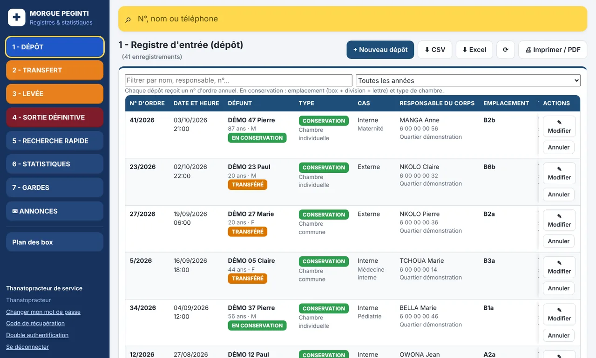
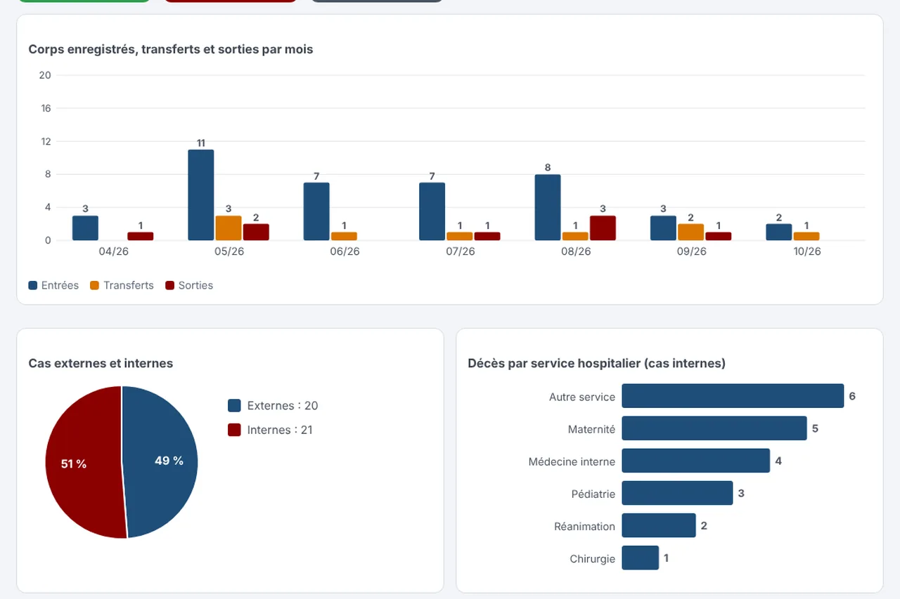
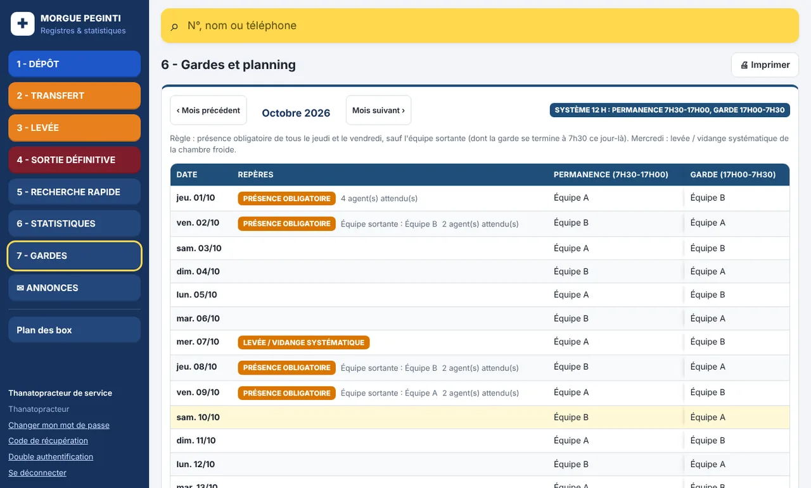

1. Dépôt
Numéro d'ordre, date et heure, nom et âge du défunt, responsable du corps (contact, adresse, visa), cas externe ou interne avec le service du décès, box de conservation, thanatopracteur de service.
Service de thanatopraxie
PEGINTI Morgue enregistre chaque dépôt, transfert, levée et sortie définitive, calcule les nuitées de conservation et produit les statistiques du service. Tout s'imprime avec l'en-tête de l'établissement et les zones de visa.
Pour les morgues d'hôpitaux et de structures de santé au Cameroun.
Les registres
Un corps déposé ouvre un dossier. Il peut être transféré, ou levé puis sorti. L'application empêche une sortie définitive avant la levée, et un seul corps occupe un emplacement.
Numéro d'ordre, date et heure, nom et âge du défunt, responsable du corps (contact, adresse, visa), cas externe ou interne avec le service du décès, box de conservation, thanatopracteur de service.
Mêmes informations que le dépôt, avec la raison du transfert et le lieu. L'emplacement est libéré au moment du transfert.
Nuitées en chambre commune ou individuelle, majoration automatique hors des heures de levée, location de chapelle, versements et reste à payer.
Genre de mort du certificat, région, département, arrondissement et village d'inhumation, date, plan de localisation archivé avec le dossier.
L'application
Captures d'écran réalisées avec des données de démonstration.
Recherche par nom, responsable ou numéro. L'état du dossier apparaît en un coup d'œil : en conservation, transféré, levé. Le registre s'exporte en Excel ou CSV et s'imprime en A4 paysage.

Corps enregistrés, transférés et sortis par mois, raison dominante des transferts, cas externes et internes, service ayant enregistré le plus de décès. Les chiffres viennent du trafic réellement enregistré, pas de la capacité de la chambre froide.

Garde de 12 h (permanence 7h30–17h00 et garde 17h00–7h30) ou garde de 24 h (7h30 à 7h30), au choix de chaque hôpital. Présence obligatoire le jeudi et le vendredi, sauf pour l'équipe sortante. Levée et vidange de la chambre froide le mercredi.

Fonctions
Sécurité
Les noms des défunts et des responsables sont des données personnelles. L'accès est contrôlé et chaque action est enregistrée.
Déploiement
Le logiciel est le même. Seuls l'emplacement du serveur, l'accès et le niveau de service changent.
L'hôpital dispose déjà d'un serveur ou d'un ordinateur dédié. TOMTECH.INC y installe l'application, la paramètre et forme l'équipe. Les données restent dans l'établissement.
Pas de serveur sur place. L'application est accessible par une adresse sécurisée propre à l'hôpital, avec sauvegardes et mises à jour assurées par nous.
Un petit serveur installé dans l'établissement, fonctionnant en réseau local, avec ou sans connexion Internet.
Questions fréquentes
Oui, en réseau local : les ordinateurs et téléphones de l'établissement se connectent au serveur de la morgue sans accès Internet. Les copies de travail hors ligne sur plusieurs appareils avec fusion ensuite ne sont pas proposées pour l'instant.
À l'établissement. TOMTECH.INC intervient comme prestataire, sur instruction écrite, et rend ou détruit les copies à la fin du contrat.
Oui. Les tarifs de nuitée, de chapelle, de majoration et de transfert, les services hospitaliers, les raisons de transfert, les box et les équipes de garde se paramètrent depuis l'application.
Il se connecte avec un code de secours, ou l'administration réinitialise sa double authentification après vérification de son identité.
Le prix dépend du modèle de déploiement, du nombre de sites et du niveau de maintenance. Écrivez-nous pour recevoir un devis adapté à votre établissement.
Contact
Dites-nous quel est votre établissement. Nous vous répondons avec une présentation sur des données fictives, puis un devis.
Écrire à contact@pegintichat.online
Téléphone et WhatsApp